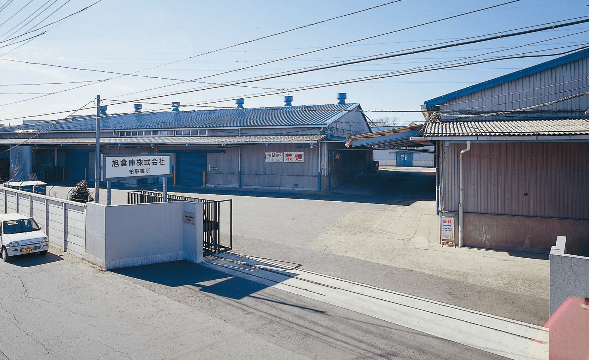

Conveniently located 15 minutes from the Kashiwa Interchange on the Joban Expressway. This warehouse is notable for its expansive site and single-story design.

Warehouse Overview
Site Area
12,426㎡
General Goods Warehouse
7,494㎡
ACCESS
ACCESS
Kashiwa Office
538 Komagi, Nagareyama-shi, Chiba 270-0132
Phone：04-7152-5141
FAX：04-7155-4450
Take the No. 2 bus from the west exit of Kashiwa Station on the Jr. Joban Line and get off at the Umebayashi bus stop.
15 minutes from the Kashiwa Interchange on the Joban Expressway